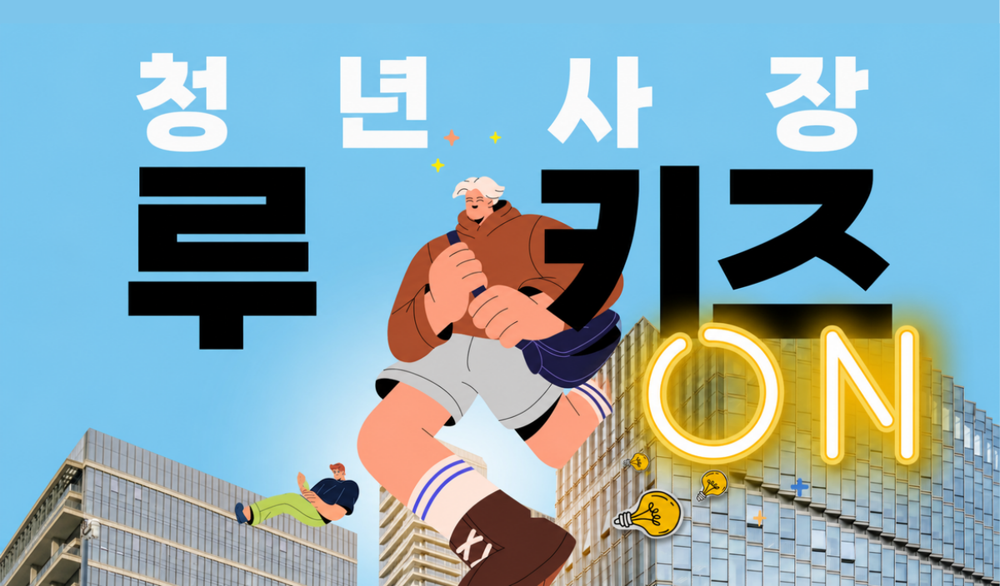
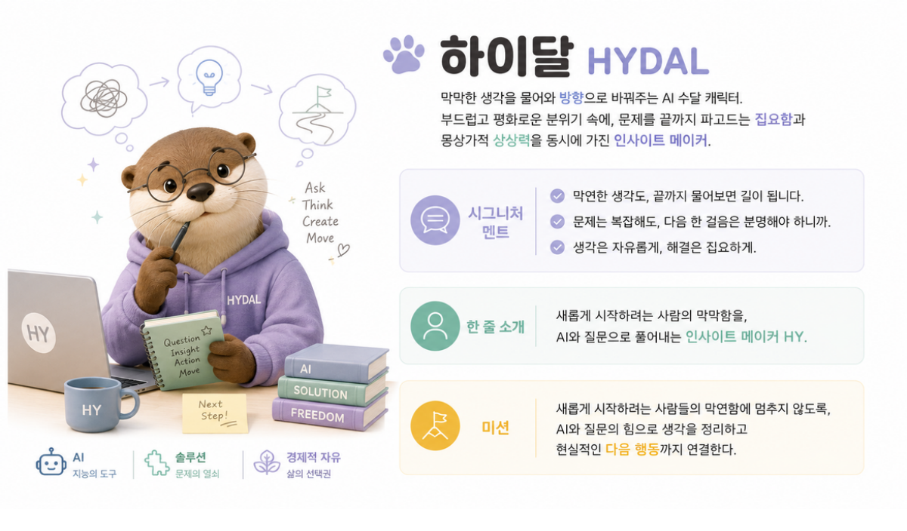
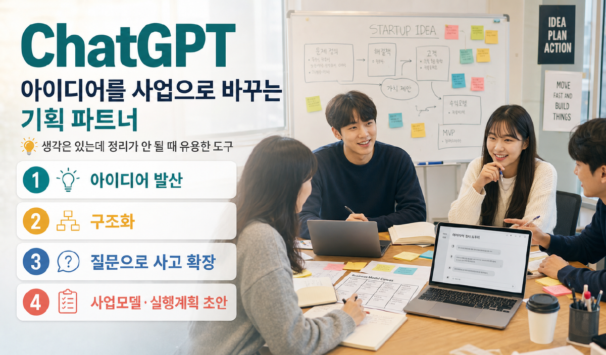
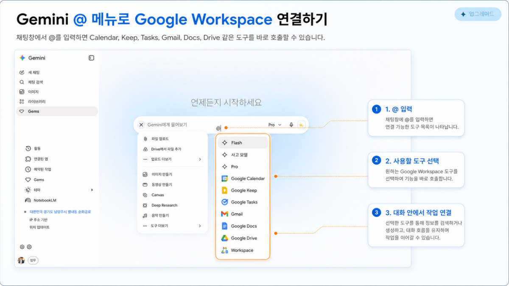
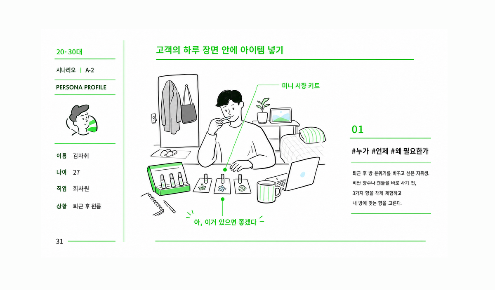

브랜드 캐릭터
내 관심사와 성격을 담은 캐릭터와 한 줄 소개를 만듭니다.

Self Learning Course
처음 시작하는 사람도 순서대로 따라오면 나만의 브랜드 캐릭터, 문제 후보, 아이디어 10개, 최종 아이템, 1분 발표문까지 완성할 수 있습니다.
Today Output
내 관심사와 성격을 담은 캐릭터와 한 줄 소개를 만듭니다.
취향과 일상 불편을 연결해 창업 문제 후보를 뽑습니다.
AI로 상품, 서비스, 콘텐츠, 커뮤니티 형태의 해결책을 넓힙니다.
대상, 문제, 해결 아이템, 다음 실험을 짧게 말할 수 있게 정리합니다.
캐릭터는 발표를 귀엽게 꾸미기 위한 장식이 아니라, 내가 어떤 문제를 어떤 태도로 해결하는 사람인지 보여주는 도구입니다.

너는 브랜딩 코치다. 아래 정보를 보고 내 브랜드 캐릭터 이름, 설명, 시그니처 멘트 3개, 한 줄 소개, 미션을 현실적이고 감각적인 청년 브랜드 느낌으로 만들어줘.
기업가처럼 생각한다는 것은 대단한 아이디어를 갑자기 떠올리는 것이 아니라, 남들이 지나치는 불편 앞에서 멈추는 것입니다.
AI에게는 문제 탐색자, 질문 설계자, 정리자, 아이디어 확장자, 비판적 검토자, 표현 코치 역할을 맡길 수 있습니다.


취향은 끝이 아니라 입구입니다. 자주 보고, 자주 사고, 잘 아는 영역 안에서 반복되는 불편을 찾아봅니다.
나는 [관심영역]에 관심이 있다. 내가 자주 느끼는 불편 3가지를 바탕으로 반복성, 공감 가능성, 해결 필요성이 있는 문제 후보 10개를 표로 정리해줘.
좋은 아이디어를 바로 고르기보다, 같은 문제를 여러 해결 패턴으로 넓힌 뒤 비교합니다.
아래 문제를 해결할 수 있는 아이디어를 상품형 3개, 서비스형 3개, 콘텐츠형 2개, 커뮤니티형 2개로 제안해줘. 각 아이디어는 누구의 어떤 문제를 어떻게 줄이는지 한 줄로 설명해줘.
가장 멋진 아이디어보다 다음 주에 작게 검증할 수 있는 아이디어를 고릅니다.

입력한 내용을 바탕으로 발표용 초안을 자동으로 정리합니다.
아직 작성된 내용이 없습니다. Step 1부터 입력해보세요.